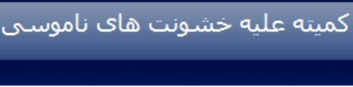

پذيرش > مقالات > خارج از چارچوب > سكوت ابهام آميز جنبش زنان در مورد قتلهاي اخير زنان در كردستان
 خشونتهای به نام ناموس خشونتهای به نام ناموس

 سكوت ابهام آميز جنبش زنان در مورد قتلهاي اخير زنان در كردستان سكوت ابهام آميز جنبش زنان در مورد قتلهاي اخير زنان در كردستان
3 شهریور 1387 - کمیته علیه خشونت های ناموسی - نسخه قابل چاپ
کمیته علیه خشونت های ناموسی- هنوز پنجمين ماه از سال جديد را پشت سر نگذاشته ايم كه آمار حكايت از وقوع گسترده قتلهاي ناموسي درايران وبخصوص كردستان است. دو مورد در سنندج، 3مورد مريوان و يك مورد پيرانشهر. تمام موارد ناموسي بوده و چند مورد هم خودسوزي .تلخ است اما تلخ تر سكوت آزاديخواهان وفعالين زن در داخل كشور است. تا كي بنويسيم مريوان مسلخ گاه زنان؟ تا كي از آمار 45در صدي قتلهاي ناموسي در خوزستان بنويسيم و تا كي از سنگسار سميه 14 ساله توسط پدر در بلوچستان بگوييم . آنقدر خوانديم ونوشتيم كه ديگر از همه چيز را از حفظيم.
ريشه اش را سالهاست يافته اييم خشونت عليه زنان واز جمله خشونتهاي ناموسي پديده جامعه طبقاتي وسيستم مرد سالاري و تداوم ان در جامعه سرمايه داري تبعيض جنسي وفرادستي وفرو دستي ..... تا كي بگوييم سنت وباورهاي غلط انقدر قوي هستند كه دست پدر را به خون فرزند آلوده ميكند تا كي بنويسيم قانون قضايي دست مردان را براي كتك آزار وشكنجه زنان و قتل وختنه باز گذاشته است؟ همه ميدانيم كه در يك جمله قانون زن را همچون كالايي در دست مردان قرار داده كه وسيله هر نوع استفاده از جمله هوسراني وخوشگذراني اشتهاي سيري نا پذير آنان شوند وميدانيم به نام حفظ شرف وناموس براحتي زنان وكودكانشان را مي كشند.
روي سخنم با فعالين وجبش زنان ايرا ن است. ما زنان مريوان وساير مناطقي كه سنتهاي كهنه وارتجاعي حرف اول را مي زنند شجاعانه وبا وجود تمامي مشكلات به پا خواستيم ونهراسيديم حتي به قيمت كشتن وسنگساردر اين منطقه سنتي . و هميشه با وجود محروميت از هرنوع امكاناتي حتي دريغ از يك تشكل قوي همچون بازوي توانا ي جنبش برابري خواهانه در سراسر دنيا عمل كرديم .وقتي از قانون ضد خانواده نوشتيد با وجودي كه ما از اساس با خانواده ايي كه برمبناي مالكيت مردان بر زنان است مخالف بوديم وهر چند كه چند همسري و مهريه وشير بها را بدون اما واگر مردود ميدانيم ومعتقد يم كه قانوني كه بر مبناي مالكيت مرد بر زن است از اساس ضد زن واصلاح ناپذير است اما هم صدايتان شديم چون همبستگي زنان را هرچند با گرايشات متفاوت وبا حفظ مواضع لازم ميدانيم .
وحتي تصميم داشتيم فرا خوان ائتلاف را نقد وتكميل كنيم اما قتلهاي اخير وكار مداوم واخبار رسيده از قتلهاي تاييد نشده زناني ديگر اين مجال را از ما گرفت وموكول به روزهاي آتي شد.
اما شما مدافعان حقوق زن در ايران در مقابل اينهمه جنايت چكار كرديد غير از نقل خبري كوتاه كدام اقدام فوري واوژانسي انجام داديد؟ كدام طيف از شما در اين مورد نوشتيد؟ بيانيه نوشتيد؟ مصاحبه داشتيد وچه تلاشي براي بر گزاري يك نشست يا همايشي سراسري كرديد؟ چند نفرتان عازم كردستان شديد تا از نزديك تحقيقي در اين مورد داشته باشيد چند نفر ازوكلا ونويسندگان وپژوهشگران يك روز از وقت تان را برا ي بررسي اين پديده شوم وكثيف اختصاص داديد؟ از وجود كدام امكانات تان بهره گرفتيد و ضرب الاجلي اعلام حمايت كرديد. چطور امكانش بود در مقابل لايحه تمام اختلافات ناديده گرفته شد و در مدتي كوتاه ائتلاف تشكيل شد . اما مجال پرداختن به قتل فرشته وشهين ومكيه ودها نفر ديگر را نداشتيد؟ آيا قتل وكشتن زنان وكودكان نيز در زمره كثيف ترين وضد بشري ترين نوع خشونت نيست وبه اندازه طلاق ومسافرت خارج از كشور وبازي زنان در استاديوم اهميت نداشت ؟ آيا بايد باور كرد كه فعالين زن در ايران اين را مشكل خاص بعضي مناطق ميدانند كه جنبه سراسري ندارد ؟ حتي اگر اينطور باشد جنبه ضد انساني كه دارد. سكوت در برابر قضاياي اخير وحركت اعتراضي مردم اين شهر تنها دست عا ملان و حاميان آنان را بازتر گذاشته وباعث شكاف واختلاف در جنبش زنان خواهد شد وتقويت اين انديشه كه جنبش زنان با طرح ا صلاح قوانين آب در هاون ميكوبد وجنبش را از مسير اصلي باز مي دارد و بخصوص فعالين در تهران خودرا در راس كار مي پندارند پرداختن به مسايل مورد نظرشان را در درجه اول وبقيه مسايل وشهرهاي ديگر را در حاشيه ميدانند؟.
کمیته علیه خشونت های ناموسی
ارسال به
بالاترین
،
توییتر
،
فریندفید
،
فیسبوک
در همين بخش :
 8 مارس روزی که نمی توان از ما دریغ کرد 8 مارس روزی که نمی توان از ما دریغ کرد
با طلاق توافقی از حقارت و کتک و فحش رها شدم /گزارشی از دادگاه محلاتی: مریم مالک
تجمع مادران عزادار در رشت
تغییر ممکن است/ جلوه جواهری(26 روز پس از بازداشت کاوه مظفری)
گامهایی که با تزلزل نا آشنایند/ گرامی داشت چهلم ندا در رشت
ديگر بخش ها :
طرح یک میلیون امضا
|
مقالات
|
سایت نوشته ها
|
اخبار
|
گزارش كمپين
|
گفت و گو
|
علیه سکوت
|
كوچه به كوچه
|
نامه های شما
|
گزارش ویژه
|
گفتگو با اعضا
|
ویژه سالگرد کمپین
|
تصویر برابری
|
دل آرام علی
|
تریبون
|
مقالات
|
تاریخ شفاهی
|
خارج از چارچوب
|
کتابخانه
|
درباره کمپین
|
کمپین در شهرها
|
کمپین در بند
|
صدای تغییر
|
ویژه 22 خرداد
|
لایحه حمایت از خانواده
|
گالری
|
عشا مومنی
|
امیر یعقوبعلی
|
خدیجه مقدم
|
راحله عسگری زاده و نسیم خسروی
|
پروین اردلان،جلوه جواهری، مریم حسین خواه، ناهید کشاورز
|
زینب پیغمبرزاده
|
سعیده امین، سارا ایمانیان، محبوبه حسین زاده، ناهید کشاورز و همایون نامی
|
احترام شادفر
|
نسیم سرابندی زاده،فاطمه دهدشتی
|
وبلاگ مهمان
|
پرونده خرم آباد
|
دستگیری ها
|
مریم مالک
|
پرستو اللهیاری
|
مهرنوش اعتمادی
|
سمیه رشیدی
|
Other Languages
|
همراهان
|
«فراخوان کمپین ده روز با بهاره هدایت»
| English
|